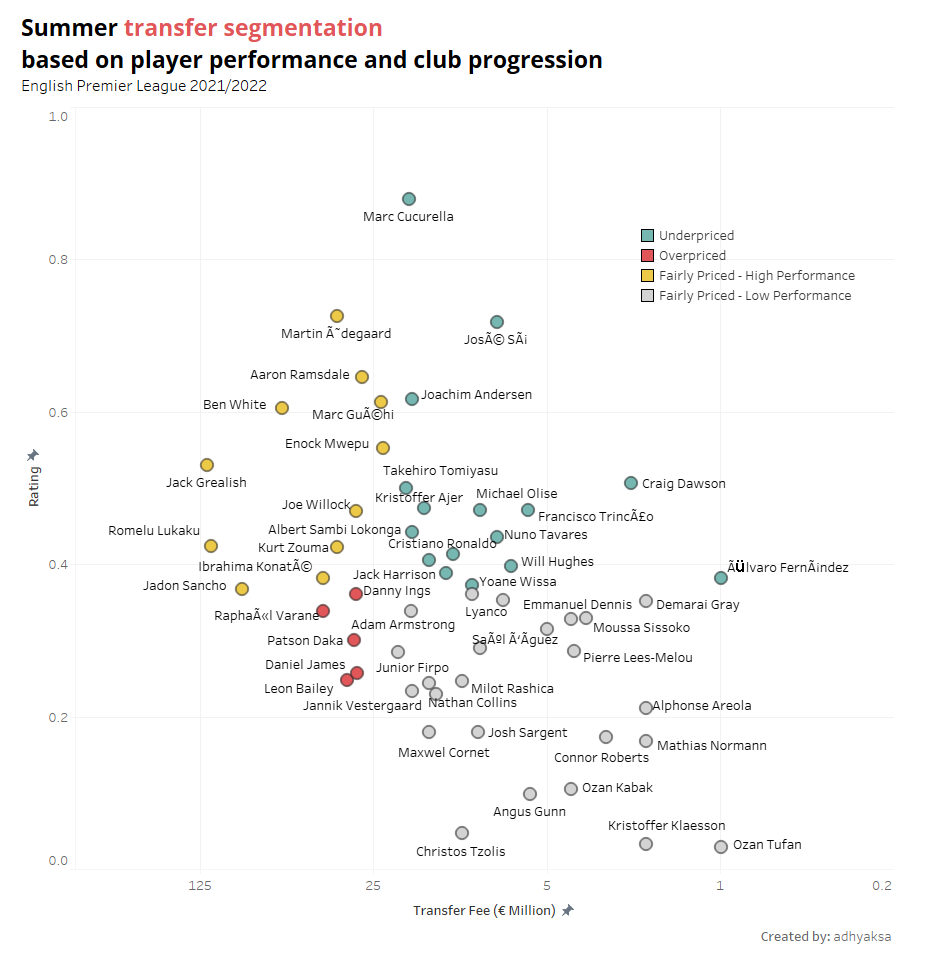
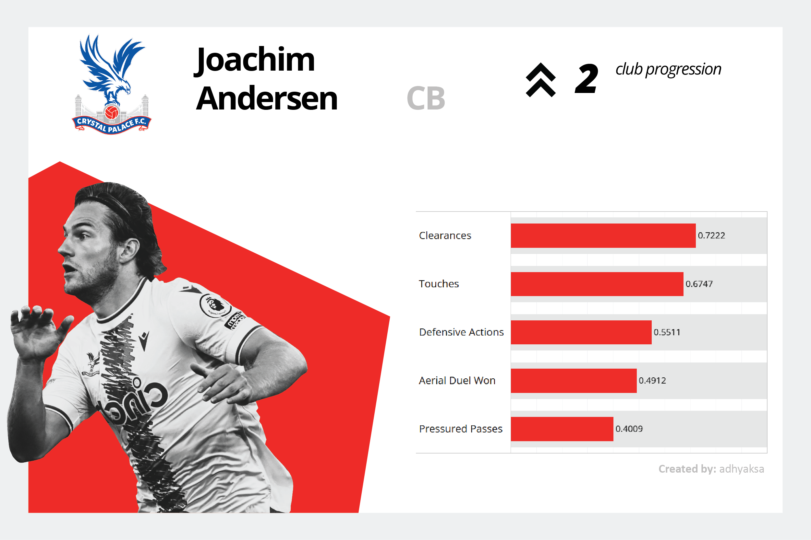

Finding Out Premier League Best Summer Signing: 2021/2022 Edition
An interactive version of this observation is available on my Tableau page
This writing is a repercussion of my curiosity as I seek to quantify the 2021/2022 Premier League summer transfer results. I will try to answer these questions:
- Who’s the best Premier League summer signing?
- How many players failed to live up to price tag expectations?
However, as a prerequisite, I need a massive database that covers detailed transfer fees at least for Premier League clubs. Lucky for me, I stumbled upon an amazing GitHub repo that provides guidance on how to append the transfermarkt data—the holy grail of global football transfers data—into a processable form.
But first…
Why English Premier League (EPL)?
EPL is undoubtedly one of the world’s most competitive football leagues. They created such an atmosphere by attracting superstars with strong CVs and young players with extraordinary talent, valuing them at very high prices.
According to the transfermarkt data1, in 2021, Premier League’s transfer expenditure alone is reaching almost € 1.7 billion, double the value of Italy’s Serie A and almost quadrupling Germany’s Bundesliga. Unsurprisingly, a very flashy difference in the 2021/2022 transfer distribution can be noticed, as pictured in the violin plot below.
The average cost spent for EPL transfer is definitely greater than others, with € 17.12 Million per player. The fee spread for EPL is also wide-ranged, where they have an IQR of 18.17 Million. Other leagues only ranged from 4.66 to 6.55 Million.
EPL’s sky-high transfer valuation makes me want to dig deeper into the price worthiness. Therefore, I choose EPL as my subject.
How well did the new signings perform and contribute to their club?
The workflow
The best and worst transfers have always become an interesting discussion at the end of football season. However, every football analyst page has its own verdict on how they judge the transfer outcome. ESPN selects the best and the worst transfers with each payer’s individual performance and characteristics. The Guardian also assessed similarly. For goal.com, they rate the transfers by focusing on how much they spent for the players, how the players contributed based on their position, and how often they played.
For my article, the main concept is comparing transfer fees and player performance ratings through scatter2. But how are the player ratings valued?
There are two things that I want to consider in forming the rating: individual player performance and club progression in terms of the club’s position improvement in the table. To calculate the player performance statistics and club progression, I will explore Fbref player statistics and league table data a little bit.
# clean the dataset
drop_col = ['played_per90','pos']
stats.drop(drop_col, inplace=True, axis=1)
stats = stats.fillna(0)
# normalize the stats with respect to the max value
temp_drop = stats[['player','squad']]
stats = stats.drop(['player','squad'], axis=1)
stats = stats/stats.max()
stats[['player','squad']] = temp_drop
# restructure the data
stats_t = stats.melt(id_vars=['player','squad'])
# give a rank for each player stats
# partitioned by player
stats_t['byplayer_rank'] = (stats_t
.groupby('player')['value']
.rank(method='dense', ascending=False)
.astype(int))
# select only the top 5 stats for each player
selected = pd.Series(stats_t['byplayer_rank']
.unique())
.nsmallest(5)
.values
stats_t = stats_t[stats_t['byplayer_rank']
.isin(selected)]
# left join club progression dataframe (progression)
# with performance rating vs transfer fee dataframe (stats_tfee)
total_rating = stats_tfee.merge(
progression,
left_on='club_name',
right_on='Squad',
how='left'
)
# give desired proportions for each parameter
total_rating['value'] = total_rating['value']*0.6
total_rating['Normalized'] = total_rating['Normalized']*0.4
total_rating['total'] = total_rating['Normalized']
+ total_rating['value']
The calculation is based on the following premise: ideally, a player will have a high rating if he performs outstandingly and leads his club to a better position. The more prominent the player and the more progressive the club, the higher the rating.
However, I want to weigh the performance aspect more than club progression. This was done to emphasize that the player really plays a role in the club’s progression. Therefore, the ratio of 60:40 is used as a multiplier.
It should be noted that selected statistics neglect the player’s specific position. Any parameters that appear on the top five of the list would be attributed to the player. This will be the limitation of this research.
The result
The data processing would emerge into a segmented scatter below:

The scatter contains 4 groups for overpriced and underpriced players and those who are fairly priced, either for the high or the low-performing players. They were divided based on the average of each comparator.
The result is, well… not fairly surprising for some of them. Jack Grealish, the most expensive signing of the season, is categorized as a fairly priced-high performing player. He is still considered worth the price. Meanwhile, Lukaku and Sancho’s performances are a little more disappointing. They are considered a borderline overrated player judging from their rating outcome.
Another player worth mentioning is Martin Ødegaard, who played really well for Arsenal last season. Performance-wise, he has been the third-best for the 21/22 transfer. In fact, Arsenal’s transfer game has been exceptionally good. All of their new signings performed above average, even two of them are categorized as underpriced players. Arsenal has the most transfers, and most of them managed to carve a good performance.
Regardless of the above, 5 out of 73 (6.84%) new signings are considered to have failed to meet their transfer fee expectations.
And the best summer transfers go to…
Three players are outstanding despite their low transfer fees. There is Marc Cucurella, who outperformed all of the transfers, with a fee of just only € 18 Million. And José Sá, who has a substantial role for the Wolves as a goalkeeper. And the last one is Joachim Andersen, who played solid defense for Crystal Palace.
To conclude this article, here is the performance breakdown of the top three summer transfers of the season:



It should be noted that the results of my analysis are for single-season performance only.
-
I use FBRef data for player performance statistics and transfermarkt for club transfers log. ↩︎
-
All of the data processing behind this post can be found here. ↩︎